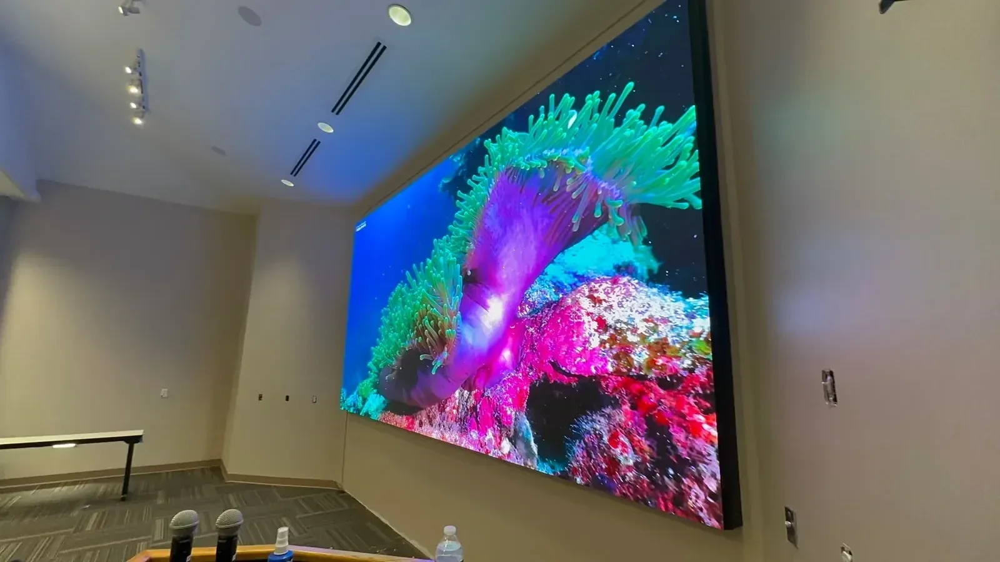
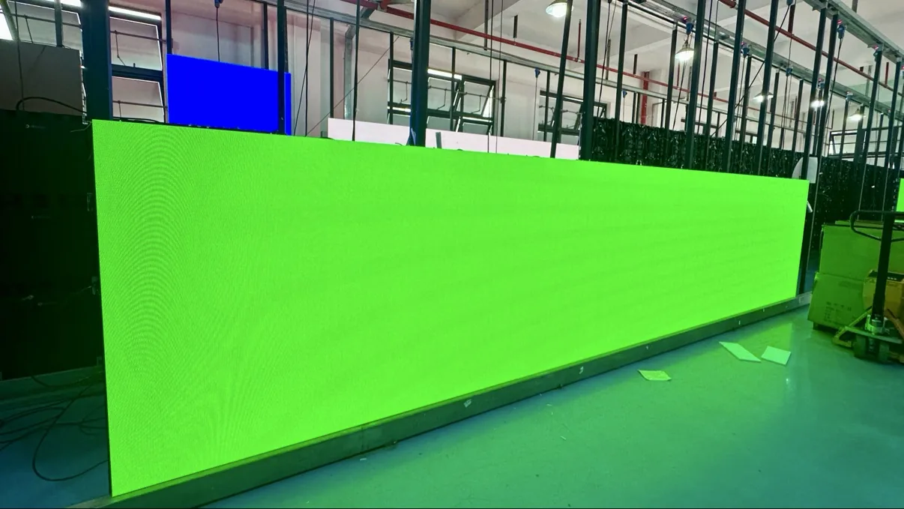
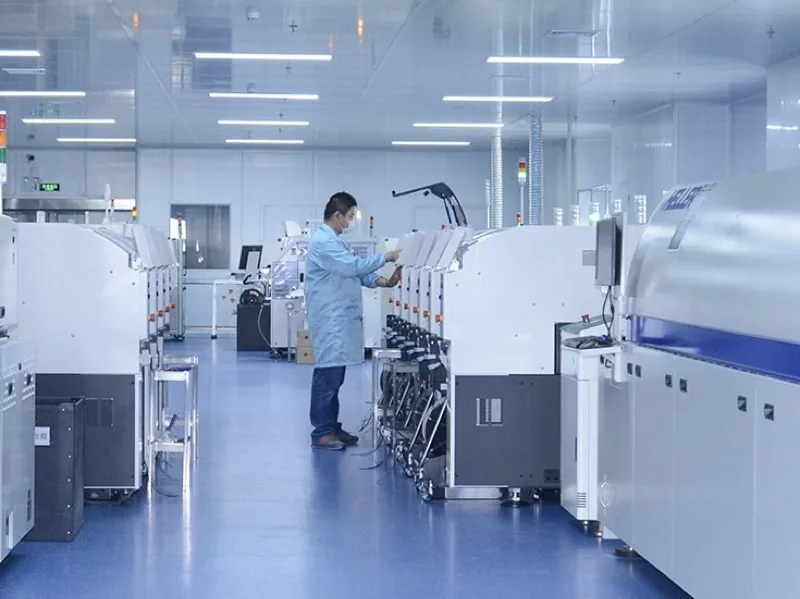

What is a 24/7 COB LED control room wall? It is a fine-pitch chip-on-board LED video wall specified to run as a live operations surface — in a command centre, network operations room, traffic or security gallery — for long daily duty, often around the clock, rather than for a meeting, a keynote or a few hours of playback. The buying decision is not only pixel pitch and wall size. It is whether the quotation is written for continuous use: a realistic operating brightness, heat in an enclosed wall, module and power redundancy, spare modules from the same production batch, and a service method the room can actually support.
This guide is for AV integrators, consultants and facility owners writing a COB LED control room into a specification or RFQ. It does not replace the control-room operations guide, which covers how a room is run, or the COB guide for AV integrators, which covers COB as a package type. Those pages are about workflow and packaging; this page is about duty cycle. For the underlying package, see the COB technology guide. Energy and drive topology, where they matter, are covered in the common-cathode energy guide — do not assume a particular drive topology on a series that does not publish one.
A boardroom wall that is bright for a two-hour review, then dimmed or powered down, is a different product request from a wall that must hold maps, camera grids and alarm text through a night shift. If the RFQ only names a size, a pitch and a peak brightness, the bidder is free to quote a meeting-room wall and leave thermal margin, spare policy, front access and failover to be discovered after handover.
Write the duty in plain language: hours per day, days per week, whether the wall is expected to stay on between shifts, and whether any period of scheduled downtime is acceptable.
Operators sit closer than a lobby audience, often for hours, reading mixed content: video, GIS, tables, tickers and overlaid status. That combination favours a fine-pitch COB surface — a continuous face without lamp beads or bezels — but only if the wall is also specified for the way it will be driven:
The RFQ should state how the wall will be used, and the quotation should confirm that the proposed series can be configured for that use.
Figure 1 shows LED cabinets on a factory aging run, lit as a continuous green field. A burn-in is not a 24/7 certificate, but it is part of how a manufacturer screens cabinets before they leave the plant. The duty cycle in the room still has to be written into the RFQ.

Asia Vision’s published starting point for a premium fixed wall in a command centre is RH-PRO COB. The product page places that series in luxury corporate headquarters, premium broadcast studios and government command centres, and it publishes: pixel pitch P0.78 / P0.93 / P1.25 / P1.56; flip-chip COB; module size 300 × 168.75 mm; refresh ≥7680 Hz; brightness 800–1200 cd/m²; contrast ≥25000:1; viewing angle 178° H/V; DCI-P3 ≥99%; and dual power, dual receiver and dual signal. The dual-path wording is cabinet and receiving-card redundancy. It is not a claim about the room’s UPS, the processor, or a 24/7 service-level agreement.
The RH-PRO page does not publish a rated duty cycle, a maximum ambient temperature, a thermal derating curve, a power-consumption figure at a stated brightness, a pixel-failure rate, or a mean time between failures. Do not infer those values from the contrast ratio, the refresh rate, or the fact that command centres are listed as a use. Ask for them, or for a written operating envelope, on the quotation.
COB CV-PRO is an indoor fine-pitch COB series: P0.9375 / P1.25 / P1.5625 / P1.875 (common anode), module 150 × 337.5 mm, no backshell, refresh ≥3840 Hz, brightness 800 cd/m². It is a valid conversation for a close-view indoor wall, but the page does not publish dual-path redundancy or a command-centre use. If the room needs the redundancy described on RH-PRO, say so in the RFQ rather than substituting a series that does not publish it.
What the factory does publish, and what is relevant to outgoing quality rather than to a room duty rating, is a 72-hour burn-in aging step for every display, in a plant with 8 IC production lines and 7 SMT lines, under ISO 9001 manufacturing, with CE, FCC and RoHS product certification. Product pages also publish a 3-year warranty and 18-day standard factory dispatch. A control-room spare kit, a commissioning visit or a particular processor option can take longer than that dispatch figure and should sit in the programme. A tour of the process is on the factory page.
Figure 2 shows a COB production line at the Shenzhen factory. Packaging quality and burn-in support a long-duty wall; they do not replace a written duty cycle, a spare-module plan, or a confirmed redundancy design.

A wall that is specified only at peak brightness will often be turned down in a dark gallery, which is correct for operator comfort and for energy, but it shifts the problem to low-level uniformity and to heat that is no longer being discussed at the catalogue figure. Ask the bidder to state a recommended operating brightness for the room, how the wall is expected to behave at that level, and how cabinet heat is rejected when the wall is recessed or closely boxed in.
This article does not invent a watt-per-square-metre figure, a maximum rear-cavity temperature, or a mandatory brightness setpoint. Those values belong in the quotation for the proposed series and the proposed room.
For a 24/7 COB LED video wall, cabinet-level dual power, dual receiver and dual signal — as published on RH-PRO COB — is a starting point, not a complete operations plan. The RFQ should also say how a failed module is replaced (front or rear, during a live shift or only in a maintenance window), how many spare modules and power supplies ship with the wall, and that spares should come from the same production batch so a replacement does not appear as a different brightness or colour island. The quantity and batch matching still have to be written into the order.
A 3-year warranty is not a 24/7 on-site response time. If the facility needs a defined response, a holding stock of spares, or a service visit window, put that in the commercial annex. The warranty period and a service-level agreement are different documents.
A workable 24/7 control-room RFQ states the duty and asks for evidence, rather than copying a brochure into the bid:
Attach a room drawing or a cavity depth, the closest and farthest operator viewing distances, the content types (video, text, SCADA or a mix), and whether the wall must remain on during a module swap. Product pages publish a 3-year warranty and 18-day standard delivery; a spare kit, a processor, or a commissioning visit should be timed in the programme.
For a premium fixed command-centre or 24/7 operations wall, start with RH-PRO COB. For a close-view indoor wall where the published redundancy of RH-PRO is not required, CV-PRO can be discussed, but only if the RFQ makes that trade-off explicit. Send the wall size, the closest viewing distance, the daily duty, and whether front or rear service is required. We will confirm the cabinet series and, on the quotation, any operating, spare or interface items that can be offered. We will not invent a duty-cycle rating, a thermal limit or a failure-rate figure that is not published on the product page. Start the enquiry through the contact form or email info@asiavisionled.com.
Specifying a 24/7 COB LED control-room wall? Send the wall size, the closest viewing distance, the daily duty and the service access, and we will reply with the cabinet data and any operating or spare items that can be confirmed. Start a project enquiry.